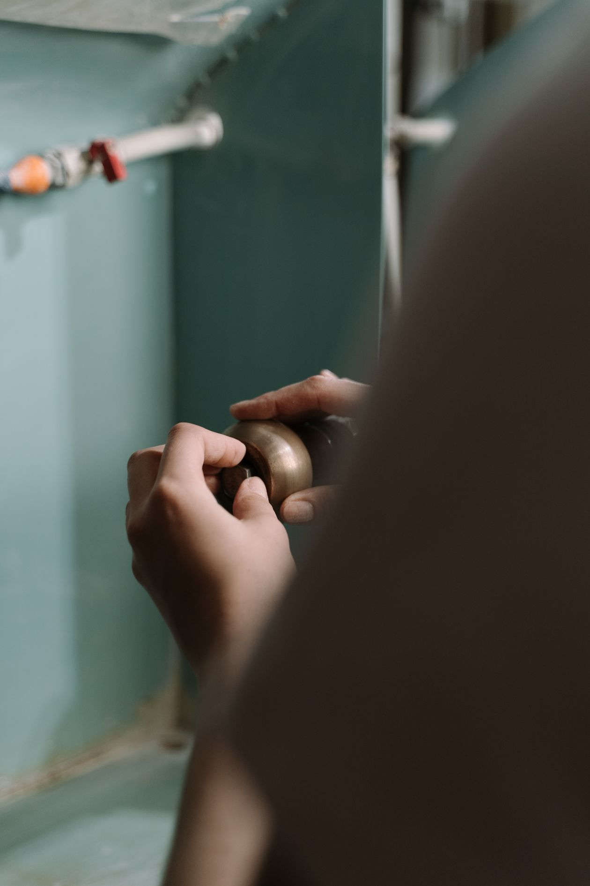
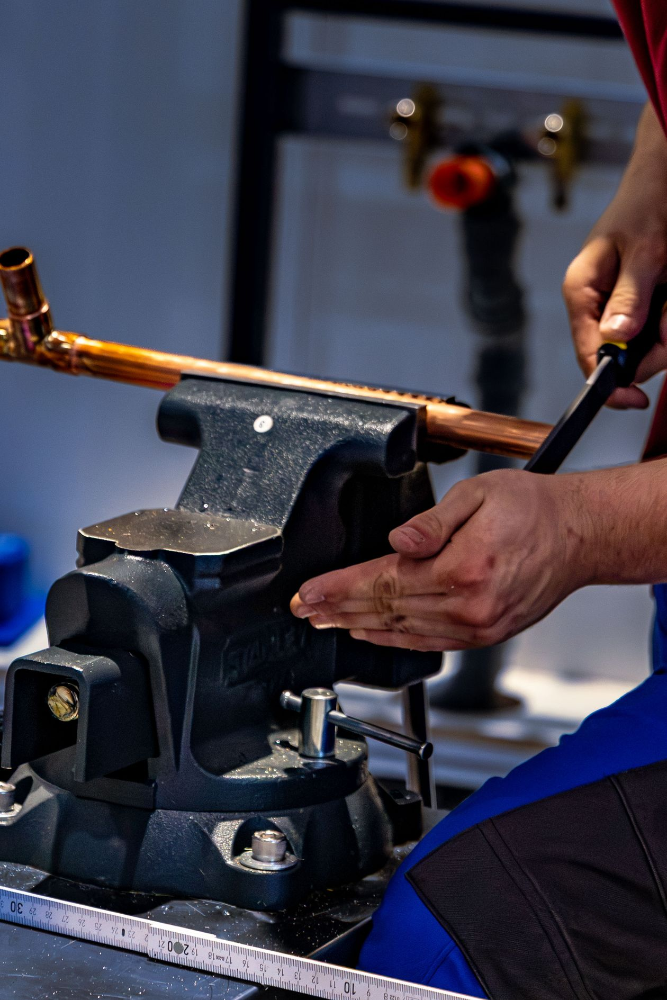
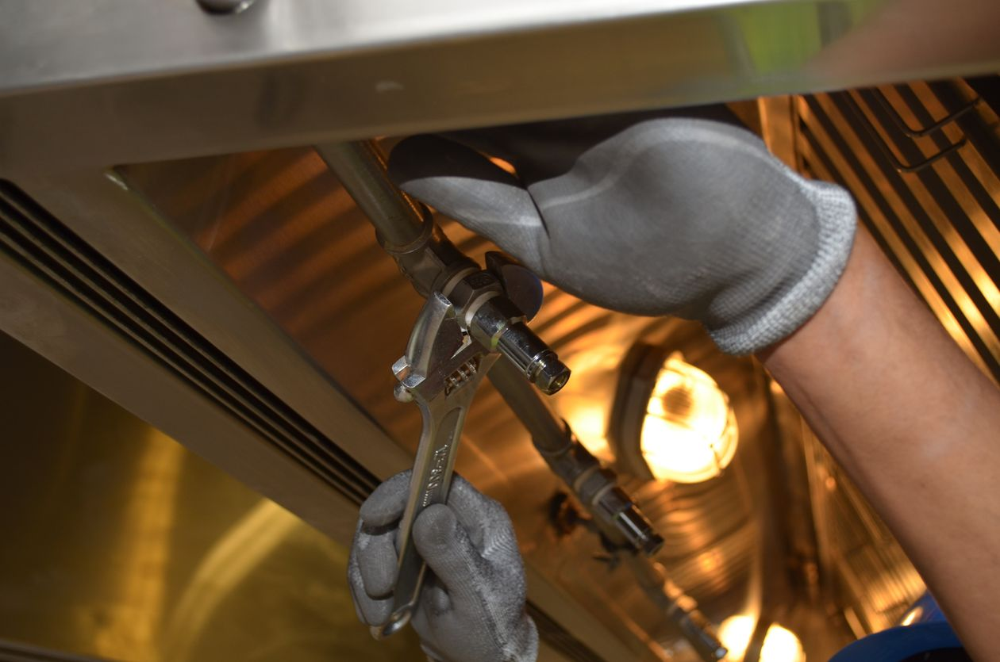
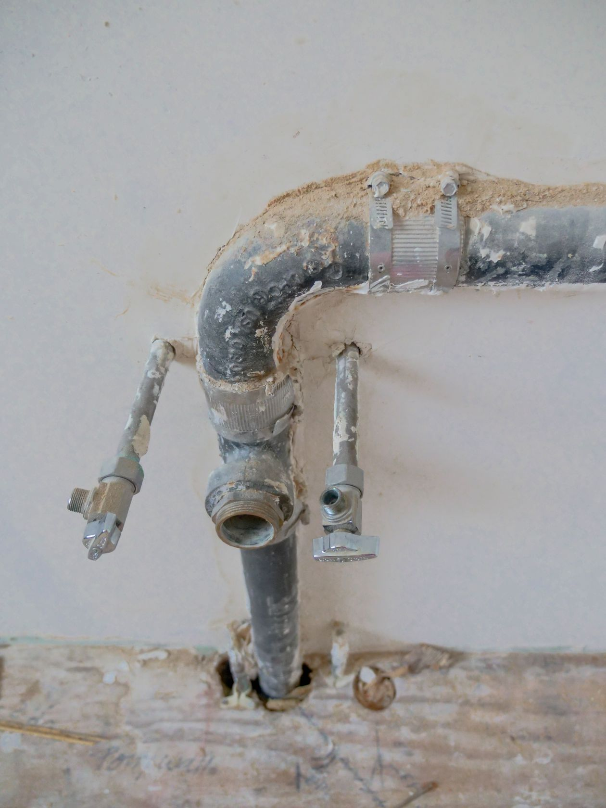
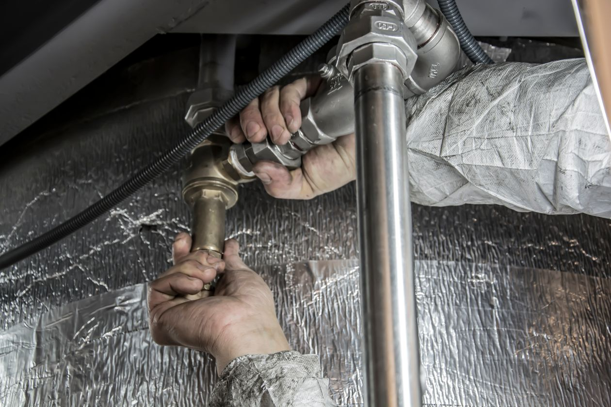

Drain Cleaning
When a drain slows or stops, the line needs to be cleared. Wayne Conn Plumbing clears clogged and sluggish drains for kitchens, bathrooms, and main lines.
- Clearing blockages in sinks, tubs, showers, and toilets
- Locating the cause of repeat clogs and slow drains
- Free estimate before any work begins

Stock photo: working on pipe connections under a sink.
Re-pipes
Older piping wears out, corrodes, and leaks. A re-pipe replaces the aging pipe in a home with new, reliable pipe, done by Licensed Master Plumbers.
- Full or partial pipe replacement for homes
- New copper and modern piping materials
- Free estimates and meet-or-beat written quotes from other licensed contractors

Stock photo: fitting copper pipe for a re-pipe.
Service & Repairs
Leaks, drips, running toilets, low pressure, worn valves, and failed fixtures. This is the day-to-day service and repair work the team has done in Jacksonville since 1987.
- Leak diagnosis and repair
- Fixture, faucet, and valve repairs and replacement
- Work performed by Licensed Master Plumbers

Stock photo: tightening a pipe fitting with an adjustable wrench.
New Construction & Remodels
Plumbing for new builds, additions, and remodel projects: rough-in piping behind the walls and finish work once the walls are closed up.
- Rough-in plumbing for new construction
- Plumbing for kitchen and bathroom remodels
- Brands installed include American Standard, Kohler, Moen, and Delta

Stock photo: rough-in plumbing on a remodel.
Tankless Water Heaters
Tankless water heaters deliver hot water on demand without a storage tank. Wayne Conn Plumbing installs tankless units and services existing systems.
- Installation of new tankless water heater units
- Service on existing tankless systems
- Brands carried include Noritz and Rinnai, plus Bradford White, A.O. Smith, and State

Stock photo: installing steel pipe runs.
Plumbing Emergency?
Use the verified emergency and after-hours lines.